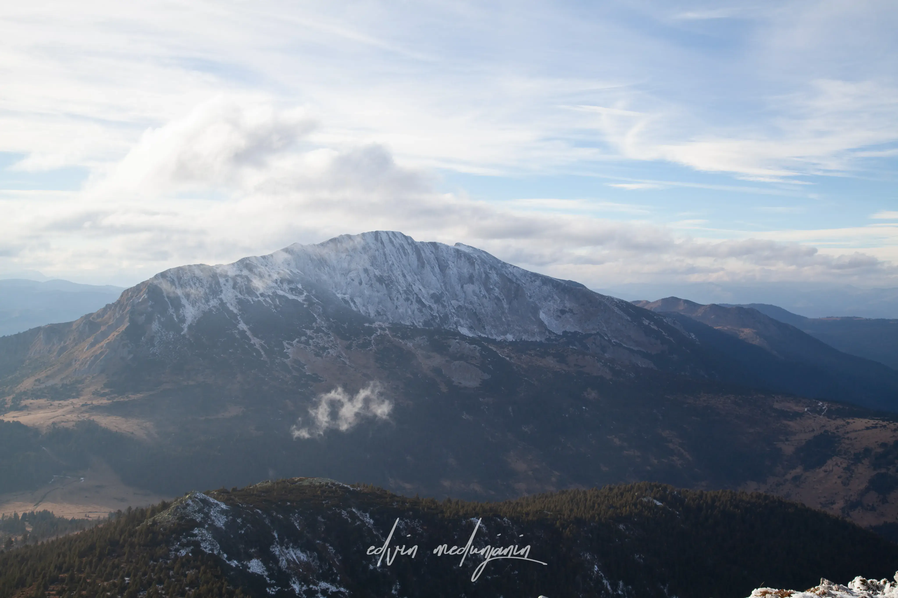
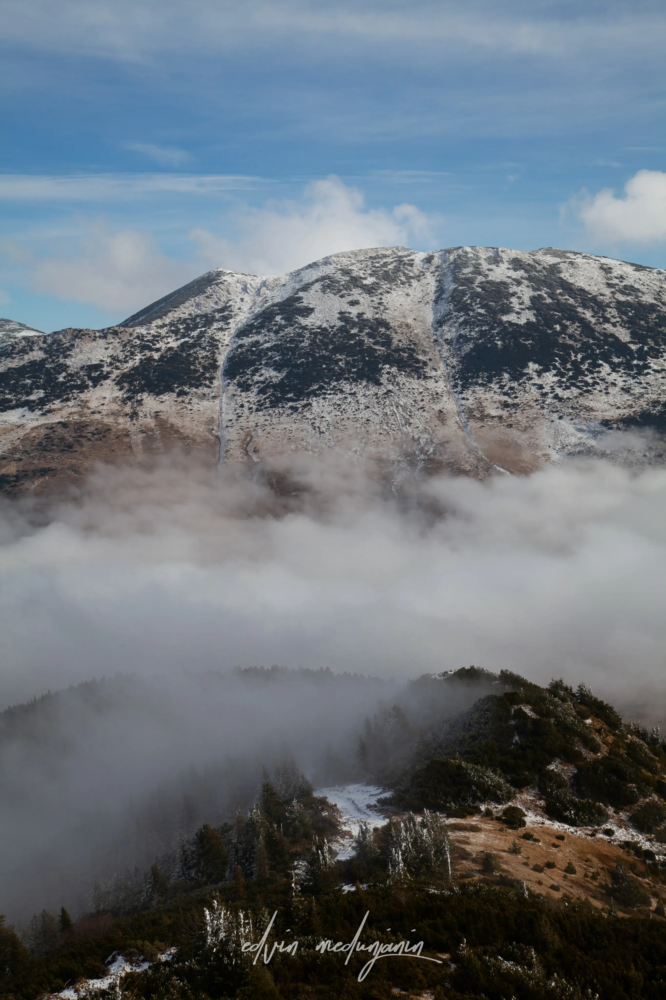
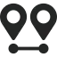
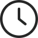
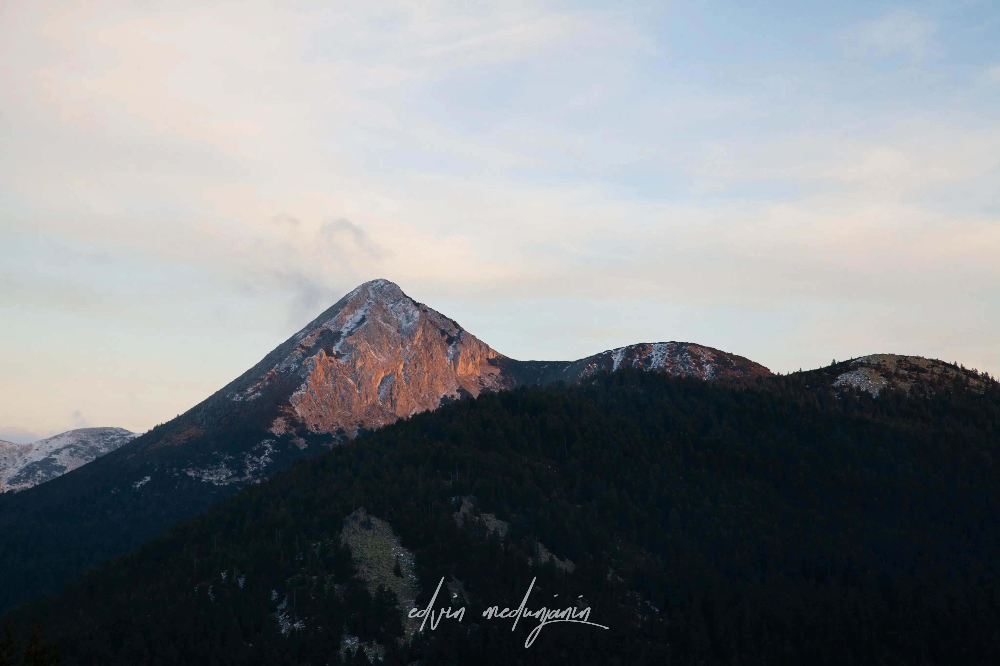

RUSOLIJA
Rusolija je markantan greben iznad Rožaja s kojeg se pruža jedan od najljepših pogleda na masiv Prokletija. Staza spaja šumske dionice i otvorene grebene, savršene za prave ljubitelje planine.

12 KM
850 M

7 SATIEkspedicija Rusolija
Krenite na uzbudljivu jednodnevnu turu grebenom Rusolije, gdje se svaki korak nagrađuje sve širim panoramama divljih vrhova Prokletija.
Kroz šumu do grebena
Uspon počinje nadomak Rožaja, mirnim šumskim putem koji se postepeno uspinje kroz guste četinare. Svjež planinski zrak i tišina šume savršen su uvod u dan na stazi.
Kako se visina povećava, drveće se prorjeđuje i pred vama se otvara greben Rusolije. Odavde počinje najljepši dio ture — hod otvorenim grebenom s pogledom na sve strane.
Staza grebenom je umjereno zahtjevna, ali svaki uspon nagrađuje novim vidikom na okolne doline, katune i daleke vrhove obasjane suncem.
Panorame Prokletija
Sa najviše tačke Rusolije otvara se veličanstven pogled na masiv Prokletija — beskrajni niz vrhova koji se gube u plavičastoj izmaglici horizonta. To je trenutak zbog kojeg vrijedi svaki uspon.
Na grebenu se grupa zaustavlja za predah i ručak iz ruksaka, uživajući u prostranstvu i tišini koju nudi samo visoka planina. Ovdje nastaju i najljepše fotografije ture.
Povratak vodi istom stazom, niz greben i kroz šumu, dok popodnevno svjetlo mijenja boje pejzaža i čini spuštanje jednako lijepim kao i uspon.
Greben za pamćenje
Jednodnevna tura na Rusoliju idealna je za iskusnije planinare koji traže više avanture i nezaboravne panorame. Spoj šume i otvorenog grebena čini je jednom od najljepših ruta u okolini Rožaja.
SVIĐA VAM SE?
Više tura
